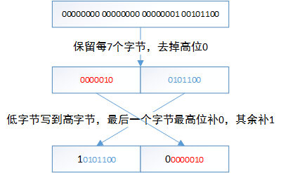

本文主要介绍protobuf里整型的编码方式，包括varint/zigzag等。分析下protobuf为了兼顾数据压缩和高性能的一些相关源码。进而给出一些pb整型使用上的建议。使用的pb版本为2.6.1。
在protobuf中序列化与反序列化是很常见的操作，无论是用于存储还是网络传输。pb提供了一组接口用于message的序列化，例如 bool SerializeToString(string* output) const;
比如我们定义了proto
message Test1 {
required int32 a = 1;
}
构造Test1对象，赋值a并且序列化到data
Test1 test;
test.set_a(150);
std::string data;
test.SerializeToString(&data);
查看data:08 96 01，只用了3个字节。
可以看到相比xml/json等包装数据的方案，pb数据非常精简。
使用protobuf以来我一直很好奇这些数字是如何表示上面的数据的？为什么只用3个字节就可以做到传输我们上面的数据？
Protbuf序列化之后的数据如此紧凑，得益于采用的编码方法。首先介绍下用于小整数的Varint编码方案。
1. Varint编码
数据传输中出于IO的考虑，我们会希望尽可能的对数据进行压缩。
Varint就是一种对数字进行编码的方法，编码后二进制数据是不定长的，数值越小的数字使用的字节数越少。例如对于int32_t，采用Varint编码后需要1~5个bytes，小的数字使用1个byte，大的数字使用5个bytes。基于实际场景中小数字的使用远远多于大数字，因此通过Varint编码对于大部分场景都可以起到一个压缩的效果。
编码规则：
最高位(most significant bit)表示编码是否继续，如果该位为1，表示接下来的字节仍然是该数字的一部分，如果该位为0，表示编码结束。字节里的其余7位用原码补齐，采用低位字节补齐到高位的办法。
举几个数值具体说明下编码规则：
- 对数字1进行varint编码后的结果为
0000 0001，占用1个字节。相比int32的数字1存储占用4个字节，节省了3个字节的空间（主要是高位的0），而Varint的想法就是 以标志位替换掉高字节的若干个0。 - 对数字300进行varint编码，原码形式为：
00000000 00000000 00000001 00101100
编码后的数据：第一个字节为10101100，第二个字节为00000010（不够7位高位补0）。
具体的变化步骤：

- 文章开始例子使用的数值150，varint编码后的结果为
10010110 00000001，即0x96 0x01。
根据上面的规则，摘抄了pb里对应的代码如下（coded_stream.cc）：
static const int kMaxVarint32Bytes = 5;
uint8 bytes[kMaxVarint32Bytes];
int size = 0;
while (value > 0x7F) {
bytes[size++] = (static_cast<uint8>(value) & 0x7F) | 0x80;
value >>= 7;
}
bytes[size++] = static_cast<uint8>(value) & 0x7F;
可以看到对于较大的数字(1«28)，使用的字节数由4个变成了5个，同时对于负数也有影响。pb里也有对应的解决方案。不过让我们先来解释下本文最开始编码字符08 96 01如何产生的问题。
2. 序列化的数据格式
pb数据是一种[key, value]的数据格式，在序列化时也是如此，其中key需要使用字段的field_number与wire type值。
field_number就是定义proto时使用的tag序号，比如对前面的proto字段a，对应的field_number=1。
wire type的取值有很多，跟定义的类型有关:
| Type | Meaning | Used For |
|---|---|---|
| 0 | Varint | int32, int64, uint32, uint64, sint32, sint64, bool, enum |
| 1 | 64-bit | fixed64, sfixed64, double |
| 2 | Length-delimited | string, bytes, embedded messages, packed repeated fields |
| 3 | Start group | groups(deprecated) |
| 4 | End group | groups(deprecated) |
| 5 | 32-bit | fixed32, sfixed32, float |
序列化key部分时，首先计算(field_number << 3) | wire_type，即低位记录wire_type，高位记录field_number。
// Number of bits in a tag which identify the wire type.
static const int kTagTypeBits = 3;
#define GOOGLE_PROTOBUF_WIRE_FORMAT_MAKE_TAG(FIELD_NUMBER, TYPE) \
static_cast<uint32>( \
((FIELD_NUMBER) << ::google::protobuf::internal::WireFormatLite::kTagTypeBits) \
| (TYPE))
然后再进行varint编码，因此 key 编码后为varint(1 << 3 | 0) = 0x08，第一节里可以看到 value 为0x96 0x01。
直接连接key value就是序列化后的最终格式了，因此编码后的数据为0x08 0x96 0x01。
注意到varint编码也应用在了key的计算上，使用非常频繁，或许是基于这个原因，pb里实现了一种性能更高的方案（coded_stream.cc）。
inline uint8* CodedOutputStream::WriteVarint32FallbackToArrayInline(
uint32 value, uint8* target) {
target[0] = static_cast<uint8>(value | 0x80);
if (value >= (1 << 7)) {
target[1] = static_cast<uint8>((value >> 7) | 0x80);
if (value >= (1 << 14)) {
target[2] = static_cast<uint8>((value >> 14) | 0x80);
if (value >= (1 << 21)) {
target[3] = static_cast<uint8>((value >> 21) | 0x80);
if (value >= (1 << 28)) {
target[4] = static_cast<uint8>(value >> 28);
return target + 5;
} else {
target[3] &= 0x7F;
return target + 4;
}
} else {
target[2] &= 0x7F;
return target + 3;
}
} else {
target[1] &= 0x7F;
return target + 2;
}
} else {
target[0] &= 0x7F;
return target + 1;
}
}
测试了1kw条数据，两种方案的时间对比为 196742us vs 269806us，在pb序列化反序列化大量使用varint的前提下，这个性能提升就很有必要了。
3. 负数使用varint编码的问题
varint编码希望以标志位能够节省掉高字节的0，但是负数的最高位一定是1， 所以varint在处理32位负数时会固定的占用5个字节。比如我们修改下之前的程序test.set_a(-1)，序列化之后的数据为：
08ff ffff ffff ffff ffff 01
有11个字节之多！除了key=0x08占用的1个字节，value=-1占用了10个字节。
对应的代码（coded_stream.h）。
inline void CodedOutputStream::WriteVarint32SignExtended(int32 value) {
if (value < 0) {
WriteVarint64(static_cast<uint64>(value));
} else {
WriteVarint32(static_cast<uint32>(value));
}
}
int32被转换成了uint64(为什么？)，再经过varint编码。这就是10个字节的原因了。
pb里提供了对应的解决方案，在介绍解决方案之前，有必要先介绍下ZigZag编码。
4. ZigZag编码
ZigZag是将有符号数统一映射到无符号数的一种编码方案，对于无符号数0 1 2 3 4，映射前的有符号数分别为0 -1 1 -2 2，负数以及对应的正数来回映射到从0变大的数字序列里，这也是”zig-zag”的名字来源。
详细的映射表是这样的：
| Signed Original | Encoded As |
|---|---|
| 0 | 0 |
| -1 | 1 |
| 1 | 2 |
| -2 | 3 |
| 2 | 4 |
| 2147483647 | 4294967294 |
| -2147483647 | 4294967295 |
对应的编码及解码方案(wire_format_lite.h)：
inline uint32 WireFormatLite::ZigZagEncode32(int32 n) {
// Note: the right-shift must be arithmetic
return (n << 1) ^ (n >> 31);
}
inline int32 WireFormatLite::ZigZagDecode32(uint32 n) {
return (n >> 1) ^ -static_cast<int32>(n & 1);
}
inline uint64 WireFormatLite::ZigZagEncode64(int64 n) {
// Note: the right-shift must be arithmetic
return (n << 1) ^ (n >> 63);
}
inline int64 WireFormatLite::ZigZagDecode64(uint64 n) {
return (n >> 1) ^ -static_cast<int64>(n & 1);
}
通过ZigZag编码后，就可以对负数进行varint编码了，abs比较小的负数转化成1个字节来存储。
5. 负数及大整数的解决方案
protobuf里提供了一种sint32/sint64来使用ZigZag编码。
修改proto:optional sint32 a = 1，这样在test.set_a(-1)并序列化后只有两个字节0801
同理对于大整数，optional int32 a = 1;，test.set_a(1 << 28)序列化后可以看到占用了6个字节0880 8080 8001，解决方案也是使用不同的类型定义optional fixed32 a = 1来解决，使用这种方案后int32固定的占用4个字节。
6. TIPS
6.1. 序列化-类型/tag
由于序列化后的数据跟字段名无关，因此不同格式的 message 只要类型/tag相同，是可以互转的，例如：
message A {
optional int32 id = 1;
optional string url = 2;
}
message B {
optional int32 a = 1;
optional string url = 2;
}
//A序列化后的数据，反序列化为B，可以正常转化
当然，尽量避免这种设计，不过明白这个原理后，当仅修改旧的 message 某个字段名时，就可以放心修改了。
从经验出发, 使用 varint 编码，整型只需要int32/int64/uint32/uint64就可以了，一般不需要考虑编码后的大小。同时对于负数、大整数较多的业务场景要注意对应 proto 类型的设计。
6.2. 序列化-wiretype
严格来讲，序列化后的数据并没有记录类型，而是一种编码的方式(如第2节表格所示)。因此不再同一行的类型，转换时也不会报错（为什么这么设计？）
message LinkV1 {
optional bytes url = 1;
optional int32 yota = 2;
optional int32 currying = 3;
}
message LinkV2 {
optional bytes url = 1;
optional int32 yota = 2;
optional string currying = 3;
}
例如LinkV1和LinkV2序列化后的数据是可以互相反序列化的，只是无法解析出curring这个字段的值。
增加一个LinkV3
message Currying = {
optional int32 currying = 1;
}
message LinkV3 {
optional bytes url = 1;
optional int32 yota = 2;
optional Currying currying = 3;
}
LinkV3 序列化后的数据，LinkV2::ParseFromString时不会报错，只是解析不出正确的 currying 的值。
而 LinkV2 序列化后的数据，LinkV3::ParseFromString可能报错，取决于LinkV2::set_currying(...)字符串的写法，感兴趣可以从序列化的过程想下为什么。
不过明显不推荐这么更新 proto，这个 TIP 仅用于加强对序列化的理解。
pb 序列化这种紧凑的编码方式，也可以应用在我们自己的序列化方案里，例如存储的场景，在leveldb 笔记里可以看到使用非常广泛。
7. 问题
- 目前仍有一个地方不大清楚，就是对于int32类型的负数，protobuf强制编码成10个字节，理论上5个字节就够了。
v1.5.1